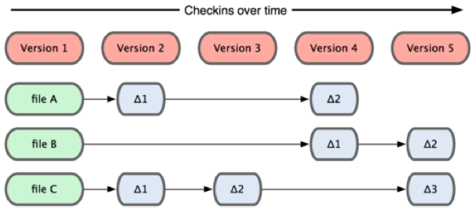
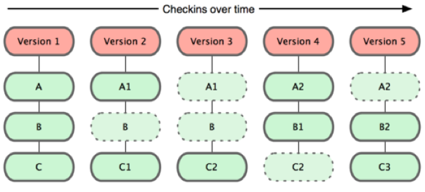
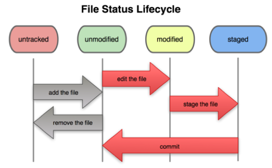

VCS
Version Control System，版本控制系统。一种记录若干文件内容变化,以便将来查阅特定版本修订情况的系统。
其它版本控制系统，如CVS，Subversion,Perforce等。
是由Linus Torvalds 为了更好地管理linux内核开发而创立的。
名称由来
I'm an egotistical bastard, and I name all my projects after myself. First Linux, now git.
其它的 VCS 工作方式
在每个版本中记录着各个文件的具体差异，更新的内容
git 的工作方式
git 并不保存这些前后变化的差异数据，而是保存每次更新时的文件快照。
在 Git 中的绝大多数操作都只需要访问本地文件和资源,不用连网。
在保存到 Git 之前,所有数据都要进行内容的校验和(checksum)计算,并将此结果作为数据的唯一标识和索引。
三种状态
modified：已修改
staged：已暂存
committed：已提交
在工作目录中修改某些文件
对这些修改了的文件作快照,并保存到暂存区域
提交更新，将保存在暂存区域的文件快照转储到 git 目录中
创建 github 账号，在 github 上新建 repository
创建本地 repository
初始化：
$ git init
Initialized empty Git repository in /Users/mario/git/.git/git init 会在当前目录中创建“.git”目录，该目录是你当前仓库的所有快照数据的存储目录。
查看文件状态：
$ git status
# On branch master
#
# Initial commit
#
nothing to commit (create/copy files and use "git add" to track)添加文件，查看文件状态：
$ touch README
$ ls
README
$ git status
# On branch master
#
# Initial commit
#
# Untracked files:
# (use "git add [file]..." to include in what will be committed)
#
# README
nothing added to commit but untracked files present (use "git add" to track)Untracked，显示未追踪。
git 不会自动追踪新加入的文件，不会纳入版本管理。
git add - 追踪文件，暂存文件：
$ git add README
$ git status
# On branch master
#
# Initial commit
#
# Changes to be committed:
# (use "git rm --cached [file]..." to unstage)
#
# new file: README
#
只要在 “Changes to be committed” 这行下面的,就说明是已暂存状态。
如果此时提交,那么该文件此时此刻的版本将被留存在历史记录中。
git commit - 提交文件：
$ git commit -m 'first commit'
[master (root-commit) 26143a0] first commit
0 files changed, 0 insertions(+), 0 deletions(-)
create mode 100644 README
$ git status
# On branch master
nothing to commit (working directory clean)git commit -m ''不加 -m 会自动打开默认文本编辑器以便提交说明信息
如果修改的文件之前已被追踪过，那么可以使用 git commit -am '' 暂存提交所有被追踪的文件，不需要进行 git add。但这样做会丢掉暂存区带来的好处。
git rm - 移除文件：
$ git rm README
rm 'README'
$ ls
$ git status
# On branch master
# Changes to be committed:
# (use "git reset HEAD [file]..." to unstage)
#
# deleted: README
#
$ git commit -m 'delete README'
[master f71c4d1] delete README
1 files changed, 0 insertions(+), 2 deletions(-)
delete mode 100644 README文件状态
添加远程仓库：
$ git remote add origin https://github.com/bzmario/git.git
$ git remote
origin
上传本地仓库：
$ git push -u origin master
Username:
Password:
Counting objects: 11, done.
Delta compression using up to 4 threads.
Compressing objects: 100% (4/4), done.
Writing objects: 100% (11/11), 816 bytes, done.
Total 11 (delta 0), reused 0 (delta 0)
To https://github.com/bzmario/git.git
* [new branch] master -> master
Branch master set up to track remote branch master from origin.$ git push -u --help
-u, --set-upstream set upstream for git pull/status
设置远程和本地仓库的上传关联，只需要第一次 push 到远程仓库时使用。之后可直接
git push$ git clone git://github.com/bzmario/git.git git-clone
Cloning into 'git-clone'...
remote: Counting objects: 11, done.
remote: Compressing objects: 100% (4/4), done.
remote: Total 11 (delta 0), reused 11 (delta 0)
Receiving objects: 100% (11/11), done.git clone 直接将远程仓库克隆至本地，不需要再初始化。
注意，此处 origin 的地址是 git-readonly 地址，是不可以进行 push 的。github 上有三种地址：
http 地址，格式为 https://github.com/用户名/仓库名.git
push 需要输入用户名和密码
ssh 地址，格式为 git@github.com:用户名/仓库名.git
使用 ssh 密钥自动登录
git-readonly 地址，格式为 git://github.com/用户名/仓库名.git
只读, 不可 push 到此仓库的远程仓库。
$ git pull
remote: Counting objects: 5, done.
remote: Total 3 (delta 0), reused 0 (delta 0)
Unpacking objects: 100% (3/3), done.
From https://github.com/bzmario/git
541c754..4d4599a master -> origin/master
Updating 541c754..4d4599a
Fast-forward
README | 4 +++-
1 files changed, 3 insertions(+), 1 deletions(-)pull 一般用做合并远程和本地分支，pull 操作会先从远程仓库抓取数据，然后自动与本地分支的数据合并。如果远程与本地有冲突，则需要手动合并冲突的文件:
$ git pull
remote: Counting objects: 5, done.
remote: Total 3 (delta 0), reused 0 (delta 0)
Unpacking objects: 100% (3/3), done.
From https://github.com/bzmario/git
7c40656..72f59fc master -> origin/master
Auto-merging README
CONFLICT (content): Merge conflict in README
Automatic merge failed; fix conflicts and then commit the result.$ subl README任何包含未解决冲突的文件都会以未合并(unmerged)状态列出:
<<<<<<< HEAD
changes from local
=======
changes from github
>>>>>>> 72f59fc6f6ff9ea4f79ea591751d54ef087dfa65可以看到 ======= 隔开的上半部分,是 HEAD(即本地 master 分支)中的内容,下半部分是在远程 origin 分支中的内容。
刚才在本地添加了一行，在远程添加一行，现在删除 <<<<<<<，=======，和>>>>>>> 这些行，合并内容:
changes from local
changes from github然后暂存，提交即可 push 到远程。
任何时候,你都有可能需要撤消刚才所做的某些操作。
修改最后一次提交:有时候我们提交完了才发现漏掉了几个文件没有加,或者提交信息写错了。想要撤消刚才的提交操作,可以使用 --amend 选项重新提交:
$ git commit --amend取消已经暂存的文件：有时候不小心使用了 git add . 把所有文件都加到了暂存区域，又想要分开提交，这时候，输入 git status，git 会告诉你怎么做：
$ git add.
$ git status
# On branch master
# Changes to be committed:
# (use "git reset HEAD [file]..." to unstage)
#
# modified: README
# modified: a.txt
#使用 git reset HEAD 文件，就可以对该文件取消暂存。
取消对文件的修改：git checkout -- 文件名，即可抛弃文件修改的命令。
注意：此操作会将文件恢复到上次提交时的状态。
git 可以对某一时间点上的版本打上标签。人们在发布某个软件 版本(比如 v1.0 等等)的时候,经常这么做。
列出所有标签：
$ git tag
v0.1
v1.3显示的标签按字母顺序排列,所以标签的先后并不表示重要程度的轻重。
列出符合条件的标签：
$ git tag -l 'v1.4.2.*'
v1.4.2.1
v1.4.2.2
v1.4.2.3
v1.4.2.4git 使用的标签有两种类型:轻量级的(lightweight)和含附注的(annotated)。轻量级标签和分支很相似只是不能改变，是个指向特定提交对象的引用。而含附注标签,实际上是存储在仓库中的一个独立对象,它有自身的校验和信息,包含着标签的名字, 电子邮件地址和日期,以及标签说明等。
含附注的标签:
$ git tag -a v1.4 -m 'my version 1.4'
$ git tag
v0.1
v1.3
v1.4-a 指定标签名字，-m 指定标签说明
轻量及标签：
$ git tag v1.4-lw
$ git tag
v0.1
v1.3
v1.4
v1.4-lw
v1.5默认情况下,git push 并不会把标签传送到远端服务器上,只有通过显式命令才能分享标签到远端仓库。其命令格式如同推送分支,运行 git push origin [tagname] 即可。
如果要一次推送所有(本地新增的)标签上去,可以使用 git push origin --tags 选项
一个简单的分支与合并的例子，实际工作中会用到这样的工作流程::
开发某个网站。
为实现某个新的需求，创建一个分支。
在这个分支上开展工作。
假设此时，你突然接到一个电话说有个很严重的问题需要紧急修补，那么可以按照下面的方式处理
返回到原先已经发布到服务器上的分支。
为这次紧急修补建立一个新分支。
测试通过后，将此修补分支合并，再推送到服务器上。
切换到之前实现新需求的分支，继续工作。
查看分支：
$ git branch
* master新建分支：
git branch [branch name]
新建分支 testing 的内容，与当前分支内容上一次提交时相同。如果此时你在当前分支做了修改，又进行提交，然后切换到 testing 分支，testing 分支仍是 master 提交前的样子。
切换分支
git checkout [branch name]
和切换分支类似，标签也可以使用这个命令加标签名字进行切换，但你在切换到的标签里所做的任何改变都不会被记录，标签记录的快照内容是不可更改。
删除分支
git branch -d [branch name]
提交分支到远程：
git push origin [branch name]
如果所有分支的暂存内容都已提交，但没有推送到远程分支，使用 git push 不加名称，可以推送所有已提交内容。git pull 同理。
分支的合并：
git merge [branch name]
/
#